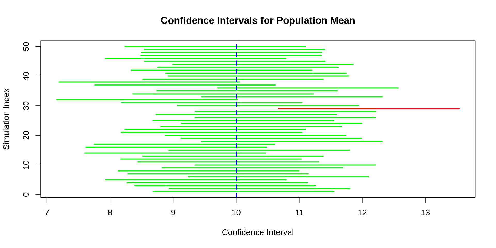

[1] 1.959964Definition 21.1
A confidence interval is a random interval that is designed in such a way that it is expected to contain a population parameter a certain percentage of the time. For a one dimensional parameter \(\theta\), it is an interval with random bounds \(L(\boldsymbol{X})\) and \(U(\boldsymbol{X})\) such that:
\[ P(L(\boldsymbol{X}) \leq \theta \leq U(\boldsymbol{X})) = 1-\alpha. \]
Here \(\boldsymbol{X} = (X_1, X_2, \dots, X_n)\) is a vector of joint random variables and \(1-\alpha\) is the confidence level of the confidence interval with \(\alpha \in (0, 1)\)
Theorem 21.1
Let \(X_1, X_2, \dots, X_n\) be independent and identically distributed normal random variables with unknown mean \(\mu\) and known standard deviation \(\sigma\). Then for a given \(\alpha \in (0, 1)\), an exact \(1-\alpha\) confidence interval for the population mean \(\mu\) is:
\[ \left(\bar{X} - z_{1-\alpha/2}\frac{\sigma}{\sqrt{n}}, \bar{X} + z_{1-\alpha/2}\frac{\sigma}{\sqrt{n}}\right) \]
where \(z_{1-\alpha/2}\) is the \(1-\alpha/2\) quantile of a standard normal distribution.
If \(X_1, X_2, \dots, X_n\) are independent normal random variables with mean \(\mu\) and standard deviation \(\sigma\), then
\[ \begin{align} P\left(-z_{1-\alpha/2} \leq \frac{\bar{X}-\mu}{\sigma/\sqrt{n}} \leq z_{1-\alpha/2}\right) &= 1-\alpha \\ P\left(-z_{1-\alpha/2}\frac{\sigma}{\sqrt{n}} \leq \bar{X}-\mu \leq z_{1-\alpha/2}\frac{\sigma}{\sqrt{n}}\right) &= 1-\alpha \\ P\left(z_{1-\alpha/2}\frac{\sigma}{\sqrt{n}} \geq \mu - \bar{X} \geq -z_{1-\alpha/2}\frac{\sigma}{\sqrt{n}}\right) &= 1-\alpha \\ P\left(\bar{X}-z_{1-\alpha/2}\frac{\sigma}{\sqrt{n}} \leq \mu \leq \bar{X} + z_{1-\alpha/2}\frac{\sigma}{\sqrt{n}}\right) &= 1-\alpha \end{align} \]

Definition 21.2
If \(Z_1, Z_2, \dots Z_n\) are independent standard normal random variables, then the random variable \(X = \sum_{i=1}^N Z_i^2\) follows a chi-square distribution with \(n\) degrees of freedom, denoted as \(\chi^2_n\). If \(X \sim \chi^2(n)\), then the PDF of \(X\) is:
\[ f_X(x;n) = \frac{1}{2^{n/2} \Gamma(n/2)} x^{n/2-1} e^{-x/2} \text{ for } x \in (0, \infty) \text{ and } 0 \text{ otherwise}, \]
the CDF is:
\[ F_X(x;n) = \begin{cases} 0 & \text{for } x \leq 0 \\ \int_0^x f_X(t;n) \ dt & \text{for } x > 0 \end{cases} \] and \(\text{E}[X]\) and \(\text{Var}[X]\) are:
\[ \begin{align} \text{E}[X] &= n \\ \text{Var}[X] &= 2n \end{align} \]
The PDF, CDF, and quantile functions in R are dchisq, pchisq, and qchisq respectively.
Definition 21.3
If \(Z \sim N(0, 1)\) and \(Y \sim \chi^2(n)\) and \(Z\) and \(Y\) are independent, then the random variable \(X = \frac{Z}{\sqrt{Y/n}}\) follows a t-distribution with \(n\) degrees of freedom, denoted as \(t_n\). If \(X \sim t(n)\), then the PDF of \(X\) is:
\[ f_X(x;n) = \frac{\Gamma\left(\frac{n+1}{2}\right)}{\sqrt{\pi n} \ \Gamma\left(\frac{n}{2} \right)} \left(1 + \frac{x^2}{n}\right)^{-\frac{n+1}{2}} \text{ for } x \in (-\infty, \infty) \]
the CDF is:
\[ F_X(x;n) = \int_0^x f_X(t;n) \ dt \text{ for } x \in (-\infty, \infty) \]
and \(\text{E}[X]\) and \(\text{Var}[X]\) are:
\[ \begin{align} \text{E}[X] &= 0 \\ \text{Var}[X] &= \frac{n}{n-2} \text{ for } n > 2 \end{align} \]
The PDF, CDF, and quantile functions in R are dt, pt, and qt respectively.
Corollary 21.1
Let \(X_1, X_2, \dots, X_n \sim N(\mu, \sigma)\) with known \(\mu\). Then:
\[ \frac{\sum_{i=1}^n (X_i - \mu)^2}{\sigma^2} \sim \chi^2(n) \]
Theorem 21.2
Let \(X_1, X_2, \dots, X_n \sim N(\mu, \sigma)\) with unknown \(\mu\), then:
\[ \frac{\sum_{i=1}^n (X_i - \bar{X})^2}{\sigma^2} \sim \chi^2(n-1) \]
Corollary 21.2
Let \(X_1, X_2, \dots, X_n \sim N(\mu, \sigma)\) with unknown \(\mu\) and \(\sigma\) and let \(S = \sqrt{\frac{1}{n-1} \sum_{i=1}^n (X_i - \bar{X})^2}\). Then:
\[ \frac{\bar{X} - \mu}{S/\sqrt{n}} \sim t(n-1) \]
Let \(Z = \frac{\bar{X}-\mu}{\sigma/\sqrt{n}} \sim N(0, 1)\) and let \(Y = \frac{\sum_{i=1}^n (X_i - \bar{X})^2}{\sigma^2} \sim \chi^2(n-1)\). Assuming correctly that \(Z\) and \(Y\) are independent, then:
\[ \begin{align} \frac{Z}{\sqrt{\frac{Y}{n-1}}} &\sim t(n-1) \\ \frac{\frac{\bar{X}-\mu}{\sigma/\sqrt{n}}}{\sqrt{\frac{\sum_{i=1}^n (X_i - \bar{X})^2}{(n-1)\sigma^2}}} &\sim t(n-1) \\ \frac{\bar{X}-\mu}{S/\sqrt{n}} &\sim t(n-1) \end{align} \]
Theorem 21.3
Let \(X_1, X_2, \dots, X_n\) be independent and identically distributed normal random variables with unknown mean \(\mu\) and unknown standard deviation \(\sigma\). Then for a given \(\alpha \in (0, 1)\), an exact \(1-\alpha\) confidence interval for the population mean \(\mu\) is:
\[ \left(\bar{X} - t_{n-1,1-\alpha/2} \frac{S}{\sqrt{n}}, \bar{X} + t_{n-1,1-\alpha/2}\frac{S}{\sqrt{n}}\right) \]
where \(t_{n-1,1-\alpha/2}\) is the \(1-\alpha/2\) quantile of a t-distribution with \(n-1\) degrees of freedom.
If \(X_1, X_2, \dots, X_n\) are independent normal random variables with mean \(\mu\) and unknown standard deviation \(\sigma\), then
\[ \begin{align} P\left(-t_{n-1,1-\alpha/2} \leq \frac{\bar{X}-\mu}{S/\sqrt{n}} \leq t_{n-1,1-\alpha/2}\right) &= 1-\alpha \\ P\left(-t_{n-1,1-\alpha/2}\frac{S}{\sqrt{n}} \leq \bar{X}-\mu \leq t_{n-1,1-\alpha/2}\frac{X}{\sqrt{n}}\right) &= 1-\alpha \\ P\left(t_{n-1,1-\alpha/2}\frac{S}{\sqrt{n}} \geq \mu - \bar{X} \geq -t_{n-1,1-\alpha/2}\frac{S}{\sqrt{n}}\right) &= 1-\alpha \\ P\left(\bar{X}-t_{n-1,1-\alpha/2}\frac{S}{\sqrt{n}} \leq \mu \leq \bar{X} + t_{n-1,1-\alpha/2}\frac{S}{\sqrt{n}}\right) &= 1-\alpha \end{align} \]
Theorem 21.4
Let \(X_1, X_2, \dots, X_n\) be independent and identically distributed random variables with unknown mean \(\mu\) and known standard deviation \(\sigma\). Then for a given \(\alpha \in (0, 1)\) and sufficiently large \(n\), an approximate \(1-\alpha\) confidence interval for the population mean \(\mu\) is:
\[ \left(\bar{X} - z_{1-\alpha/2}\frac{\sigma}{\sqrt{n}}, \bar{X} + z_{1-\alpha/2}\frac{\sigma}{\sqrt{n}}\right) \]
where \(z_{1-\alpha/2}\) is the \(1-\alpha/2\) quantile of a standard normal distribution.
When the \(X_i\) aren’t normal, we don’t know the exact distribution of \(\bar{X}\). However, the Central Limit Theorem says that if \(n\) is large enough, then we can approximate this distribution using a normal distribution.
Theorem 21.5
Let \(X_1, X_2, \dots, X_n\) be independent and identically distributed random variables with unknown mean \(\mu\) and unknown standard deviation \(\sigma\). Then for a given \(\alpha \in (0, 1)\) and sufficiently large \(n\), an approximate \(1-\alpha\) confidence interval for the population mean \(\mu\) is:
\[ \left(\bar{X} - t_{n-1,1-\alpha/2} \frac{S}{\sqrt{n}}, \bar{X} + t_{n-1,1-\alpha/2}\frac{S}{\sqrt{n}}\right) \]
where \(t_{n-1,1-\alpha/2}\) is the \(1-\alpha/2\) quantile of a t-distribution with \(n-1\) degrees of freedom.
Again, even though we don’t know the exact distribution of \(\bar{X}\), the Central Limit Theorem says it will be approximately normal for large \(n\). We also don’t know the exact distribution of \(S^2\), but if \(n\) is large enough, this approximation works well.
Example 21.1
A manufacturer wants to estimate the average weight of a certain type of battery. A random sample of 40 batteries is selected, and their average weight is found to be 52.3 grams. It is known that the weight of these batteries follows a normal distribution with a standard deviation of 1.8 grams. The manufacturer wants to construct a 95% confidence interval for the population mean battery weight.
Find the value of the quantile (either \(z_{1-\alpha/2}\) or \(t_{n-1, 1-\alpha/2}\)) that would be used in constructing the confidence interval.
Example 21.2
A pharmaceutical company is testing a new drug and wants to estimate the average recovery time for patients. A random sample of 35 patients who took the drug had a mean recovery time of 14.2 days with a sample standard deviation of 2.5 days. The company assumes the recovery times follow a normal distribution. They wish to construct a 99% confidence interval for the population mean recovery time.
Find the value of the quantile (either \(z_{1-\alpha/2}\) or \(t_{n-1, 1-\alpha/2}\)) that would be used in constructing the confidence interval.
Example 21.3
A food company wants to estimate the average sugar content in their fruit juice. A random sample of 50 bottles is tested, and the average sugar content is found to be 18.6 grams per bottle. Previous studies have shown that the population standard deviation is 3.2 grams. The company wishes to construct a 90% confidence interval for the true mean sugar content.
Find the value of the quantile (either \(z_{1-\alpha/2}\) or \(t_{n-1, 1-\alpha/2}\)) that would be used in constructing the confidence interval.
Example 21.4
A city planner wants to estimate the average commute time for workers in a metropolitan area. A random sample of 45 workers is surveyed, and the average commute time is found to be 32.5 minutes with a sample standard deviation of 6.8 minutes. The planner does not know if the commute times follow a normal distribution but assumes that the sample size is sufficiently large. They want to construct a 95% confidence interval for the population mean commute time.
Find the value of the quantile (either \(z_{1-\alpha/2}\) or \(t_{n-1, 1-\alpha/2}\)) that would be used in constructing the confidence interval.
Example 21.5
An airline wants to estimate the average fuel consumption of its planes on a particular route. From historical data, the standard deviation of fuel consumption is known to be 250 gallons per flight. A random sample of 36 flights is selected and are assumed to be normally distributed. The mean fuel consumption is found to be 3,800 gallons. The airline wants to construct a 99% confidence interval for the population mean fuel consumption.
Find the value of the quantile (either \(z_{1-\alpha/2}\) or \(t_{n-1, 1-\alpha/2}\)) that would be used in constructing the confidence interval.
Example 21.6
A university is conducting a study on student sleep patterns. A random sample of 50 students is surveyed, and their average sleep duration is found to be 6.7 hours per night with a sample standard deviation of 1.2 hours. The distribution of sleep duration is unknown, but the sample size is considered large. The university wants to construct a 90% confidence interval for the mean sleep duration.
Find the value of the quantile (either \(z_{1-\alpha/2}\) or \(t_{n-1, 1-\alpha/2}\)) that would be used in constructing the confidence interval.
Example 21.7
A manufacturer wants to estimate the average weight of a certain type of battery. A random sample of 40 batteries is selected, and their average weight is found to be 52.3 grams. It is known that the weight of these batteries follows a normal distribution with a standard deviation of 1.8 grams. The manufacturer wants to construct a 95% confidence interval for the population mean battery weight.
Example 21.8
A pharmaceutical company is testing a new drug and wants to estimate the average recovery time for patients. A random sample of 35 patients who took the drug had a mean recovery time of 14.2 days with a sample standard deviation of 2.5 days. The company assumes the recovery times follow a normal distribution. They wish to construct a 99% confidence interval for the population mean recovery time.
Example 21.9
A food company wants to estimate the average sugar content in their fruit juice. A random sample of 50 bottles is tested, and the average sugar content is found to be 18.6 grams per bottle. Previous studies have shown that the population standard deviation is 3.2 grams. The company wishes to construct a 90% confidence interval for the true mean sugar content.
Example 21.10
A city planner wants to estimate the average commute time for workers in a metropolitan area. A random sample of 45 workers is surveyed, and the average commute time is found to be 32.5 minutes with a sample standard deviation of 6.8 minutes. The planner does not know if the commute times follow a normal distribution but assumes that the sample size is sufficiently large. They want to construct a 95% confidence interval for the population mean commute time.
Example 21.11
An airline wants to estimate the average fuel consumption of its planes on a particular route. From historical data, the standard deviation of fuel consumption is known to be 250 gallons per flight. A random sample of 36 flights is selected and are assumed to be normally distributed. The mean fuel consumption is found to be 3,800 gallons. The airline wants to construct a 99% confidence interval for the population mean fuel consumption.
Example 21.12
A university is conducting a study on student sleep patterns. A random sample of 50 students is surveyed, and their average sleep duration is found to be 6.7 hours per night with a sample standard deviation of 1.2 hours. The distribution of sleep duration is unknown, but the sample size is considered large. The university wants to construct a 90% confidence interval for the mean sleep duration.
Given a set of observations with unknown mean and unknown standard deviation, we can use the t.test function in R to construct confidence intervals.
Example 21.13
A researcher is studying the effects of a new fertilizer on plant growth. They measure the height (in cm) of 10 randomly selected plants after four weeks of growth:
The researcher assumes that plant heights follow a normal distribution and wants to construct a 95% confidence interval for the population mean height.
Example 21.14
A company wants to estimate the average time (in minutes) employees spend on breaks each day. A random sample of 35 employees is selected, and the following break times are recorded:
The company does not know the distribution of break times but assumes the sample size is large enough. They wish to construct a 90% confidence interval for the population mean break time.
Example 21.15
A hospital wants to estimate the average heart rate (in beats per minute) of patients recovering from a certain surgery. A random sample of 12 patients is selected, and their recorded heart rates are:
Assuming heart rates follow a normal distribution, construct a 99% confidence interval for the population mean heart rate.
Example 21.16
A professor is analyzing the scores of students on a recent statistics exam. A random sample of 40 student scores is obtained:
The professor does not know the distribution of exam scores but assumes the sample size is large enough. They wish to construct a 95% confidence interval for the population mean exam score.